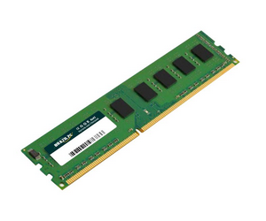
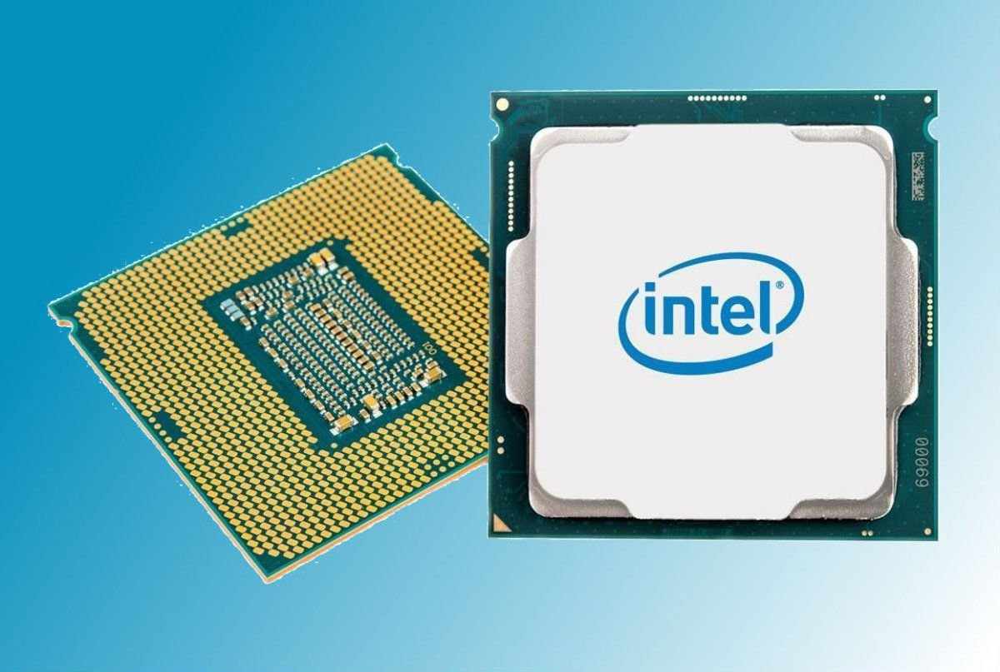

Memória
Memoria: Esse tema é bem demonstrado na apostila porém foi uns do que menos gostei, fala sobre os tipos de memória sendo elas memorias do tipo interno, primário e secundário, há varias explicações sobre o que cada uma armazena como exemplo a memoria RAM que é uma memória do tipo primário cuja função é receber dados e aloca-los em um lugar da sua memória enquanto o computador estiver ligado, quando ele desliga nenhum dado fica salvo nessa memoria já que ela é volátil, para quem tem experiencia em programação pode alocar as variáveis criadas em determinados endereços da memoria RAM para que os bits da variável não precise ficar procurando um endereço aleatório sempre que o código é compilado isso ajuda muito e reduz o desgaste da memória.
Existem as memorias do tipo interno que estão alocadas junto ao processador e são muito rápidas capazes de armazenar dados com baixo valor de armazenamento, são elas, registradoras cuja função é armazena dados que serão executados pela cpu, por isso elas são tão rápidas para igualar a velocidade da cpu. A memoria interna cache é responsável por salva alguns programas que sempre são abertos pelo usuário para assim ter mais velocidade quando for abrir o programa
As memorias do tipo secundário são aquelas que guardam arquivos com maior valor de armazenamento, mesmo com o computador desligado os arquivos ficam salvos, são exemplos de memoria secundaria HD e SSD, elas são mais lentas que a memoria do tipo interno e primário e por isso conseguem armazenar em grande quantidade por não serem tão caras.
As memorias fazem um papel muito importante pois sem elas o computado não consegue executar nenhuma tarefa já que não consegue alocar todas as variáveis que necessitam para que haja o funcionamento.
 